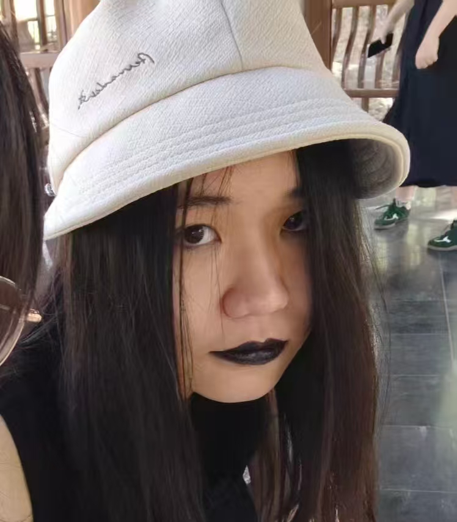
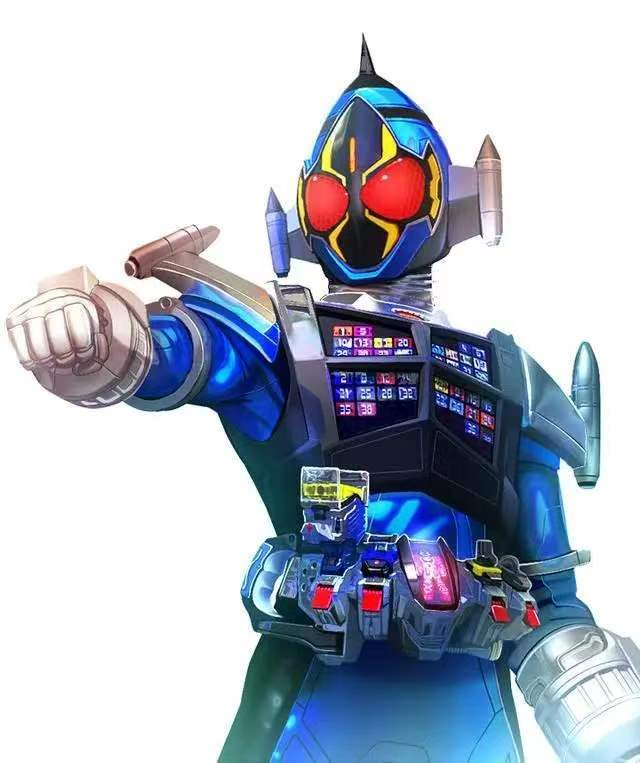

开发团队

黄施宸
组长 · 策划
一边学习，一边制作项目。喜欢 Roguelike、平台跳跃与有趣的游戏， 也喜欢电吉他、金属乐和鸟。
个人介绍 →Ray
主程序
喜欢写基建、造小工具、打 Linux 包，打磨开发体验并分享开源成果。主要使用 TypeScript 和 Rust。
个人介绍 →
S.T.Nefia
程序 · 策划
喜欢广泛方式的创作，在反思中提高水平。热爱自然哲学与计算机科学， 努力成为最自由的未来主义者预备役。
个人介绍 →
许基全
故事创作
来自印度尼西亚雅加达，就读于软件工程专业。负责撰写故事内容， 平时喜欢羽毛球、健身和与亲友相聚。
个人介绍 →
董耀楠
团队成员
喜欢特摄、游戏、音乐和电影。
个人介绍 →